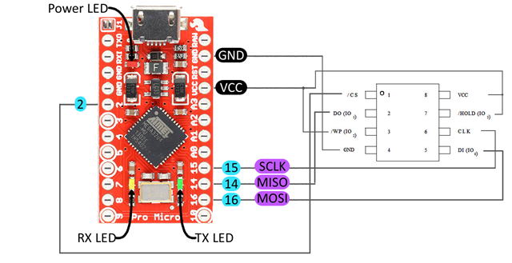
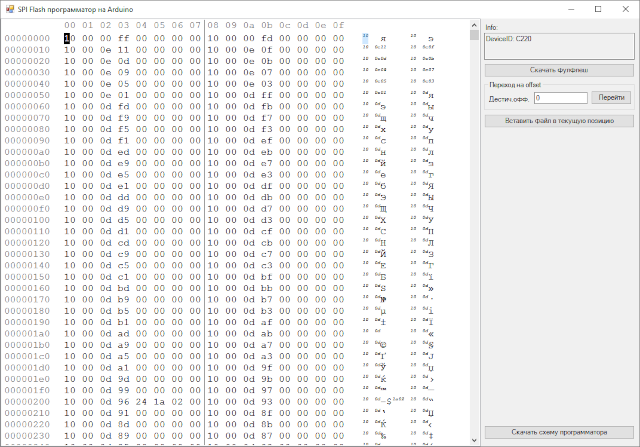

В общем, приведенная ниже схема нужна чтобы перепрошивать 8 ножные SPI-флешки. А это, в свою очередь, необходимо чтобы восстанавливать роутеры, сбрасывать пароли на BIOS и восстанавливать их, и много чего еще.
Будем делать за 10 минут самый простой программатор своими руками на Ардуино. Понадобится Arduino Pro Micro ну или любая другая. Если используется другая, то ножки SPI-интерфейса должны быть подключены к соответсвующим ножкам SPI интерфейса другой Arduino. А ножка 2 так и должна остаться цифровой ножкой (D2).
Собираем эту сложную схему:

Пофиг что 5 вольт, еще ничего не сгорело ни разу. Но только выпаивать флешки надо из платы, так как другие элементы могут быть не такими устойчивыми. Если на Arduino есть контакт 3.3V, то для VCC лучше использовать его, так как 8-ми ножечные SPI-флешки обычно расчитанны именно на 3.3V (реже на 1.8V, но 3.3V - это лучше, чем запитывать такую флешку от 5V).
Сама прога-программатор под Windows выглядит так:

Этот программатор прикреплен к записи (SpiEepromFlasher.zip). Вначале через него надо снять фулл-дамп, желательно два раза и сравнить полученные файлы, проверив чтобы они были одинаковыми. При снятии фулл-дампа может показаться что программа не работает, но это не так. Внизу справа будет потихоньку ползти полоса наполнения. Для прошивания образа необходимо обязательно поставить курсор на адрес 0, после чего нажать кнопку "Вставить файл в текущую позицию".
Чтобы программатор работал, необходимо в Arduino загрузить скетч:
#include "SPIFlash.h"
#include <SPI.h>
#include <avr/wdt.h>
//////////////////////////////////////////
// flash(SPI_CS, MANUFACTURER_ID)
// SPI_CS - CS pin attached to SPI flash chip (8 in case of Moteino)
// MANUFACTURER_ID - OPTIONAL, 0x1F44 for adesto(ex atmel) 4mbit flash
// 0xEF30 for windbond 4mbit flash
//////////////////////////////////////////
SPIFlash flash(2, 0);
byte buf[1024];
void setup() {
Serial.begin(115200);
while (!Serial);
if (flash.initialize())
Serial.println("Init OK!");
else
Serial.println("Init FAIL!");
}
void loop() {
char cmd;
if (!Serial.available()) return;
cmd = Serial.read();
if (cmd == 't') {
Serial.print("COM ok\n");
return;
}
if (cmd == 'i')
{
Serial.print("DeviceID: ");
Serial.print(flash.readDeviceId(), HEX);
Serial.print('\n');
return;
}
if (cmd == 'a')
{
flash.chipErase();
while (flash.busy());
Serial.print("OK");
Serial.print('\n');
return;
}
if (cmd == 'e')
{
long sector = Serial.parseInt();
Serial.read(); // разделитель
flash.blockErase4K(sector);
Serial.print("OK");
Serial.print(sector);
Serial.print('\n');
return;
}
if (cmd == 'w')
{
long addr = Serial.parseInt();
Serial.read(); // разделитель
for (int bufsz = 0; bufsz < 128; bufsz++)
{
while (Serial.available() == 0);
buf[bufsz] = Serial.read();
}
flash.writeBytes(addr, buf, 128);
Serial.print("OK");
Serial.print(addr);
Serial.print('\n');
return;
}
if (cmd == 'r') {
long addr = Serial.parseInt();
Serial.read(); // разделитель
for (int i = 0; i < 4; i++)
{
flash.readBytes(addr + (i * 1024) + 0, buf, 1024);
for (int j = 0; j < 1024; j++)
Serial.write(buf[j]);
}
return;
}
}
Чтобы открыть данный скетч в Arduino, этот код можно сохранить в отдельный каталог под именем programmator.ino. Туда же надо добавить файлы библиотеки spi-eeprom-fw2 (файл с архивом библиотеки пркреплен к записи. В архива два файла библиотеки и пример использования, он в данном случае не нужен).
Во время запуска программатора, ардуиновская консоль COM-порта должна быть закрыта, иначе программа программатора не сможет захватить COM-порт для своей работы.
Программатор опробован на флешках 25Q128FVSG, 25L3206E, GD25B64BPIG, еще какая-то безымянная роутерная FLASH.
Как выяснилось, программатор может иногда не работать. Причин может быть несколько:
— либо слишком длинные провода к флешке (нормально 8-15 см)
— либо слишком китайская ардуина (например Arduino Nano V3)
— либо дохлая флешка